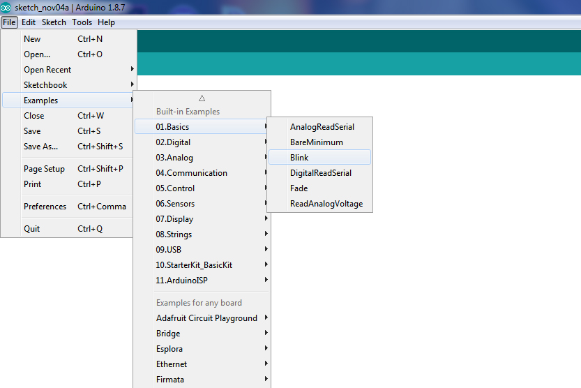
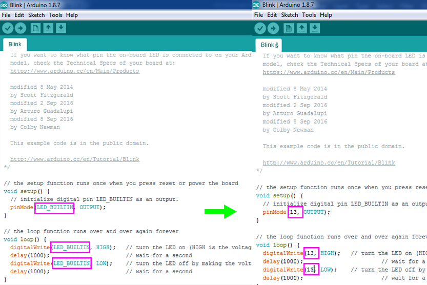
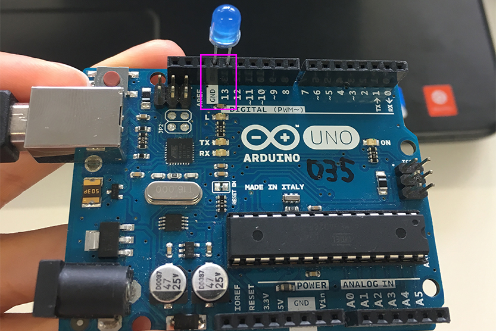
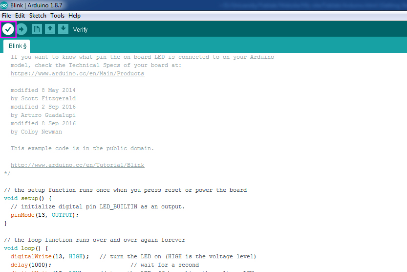
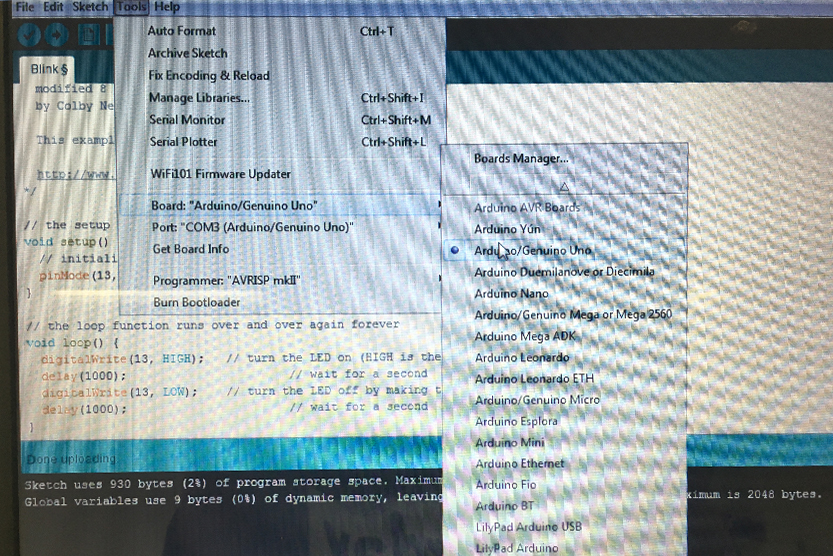
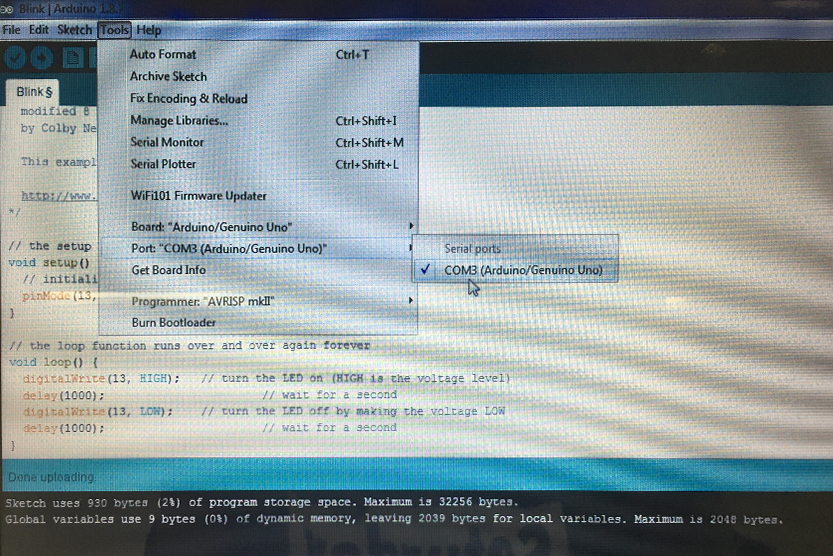

Arduino is an open-source electronic prototyping platform enabling users to create interactive electronic objects. Arduino consists of both a physical programmable circuit board (often referred to as a microcontroller) and a piece of software, or IDE (Integrated Development Environment) that runs on your computer, used to write and upload computer code to the physical board.
Programming Arduino
1
To work with Arduino you need to install Arduino Software. You can download it here
link
2
Arduino has ready for use examples of code, which you can use. For example, blinking of LED. To find it you have to go to File/Examples/Basic/Blink.

In a new window you have to change Led_buitin to the number of pin you are going to use. In this case we are using pin 13. Also you can change delay and it will change time of blinking your LED.

We are going to place our LED into GND (-) and pin 13 (+).

3
Next step is veryfing the code. You have to press button as on photo.

4
Now you have to connect your Arduino with your computer through usb cable and check settings of board and port as on photos below.


5
Now you can upload and see the result - blinking LED. Id you want to chane delay you have to change it in the code and then repeat steps 3 and 4.